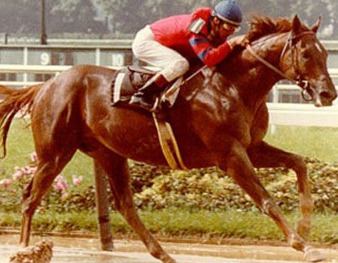

Red Rum – Król Aintree
Red Rum (ur. 1965, zm. 1995) to najbardziej utytułowany koń w historii wyścigu przeszkodowego Grand National. Ten kasztanowaty ogier stał się ikoną wytrzymałości, zdobywając serca Brytyjczyków w latach 70. XX wieku. Był niezwykłym wierzchowcem: pięciokrotnie startował w Grand National (1973-1977), z czego zwyciężył trzykrotnie i dwukrotnie zajął drugie miejsce. Jego historia jest symbolem niezłomności i walki z przeciwnościami losu.
Rekord Grand National (Wyścigi Przeszkodowe)
Żaden inny koń nie zdołał powtórzyć rekordu Red Ruma. Jego zwycięstwa w 1973, 1974 i 1977 roku są do dziś kamieniem milowym w historii wyścigów przeszkodowych. Niezwykłe było to, że jego trener, Ginger McCain, musiał leczyć go z przewlekłej choroby kości i kopyt, używając do tego kąpieli w wodzie morskiej.
Dziedzictwo
Red Rum jest pochowany przy słupie mety na torze Aintree. Jest jednym z najbardziej rozpoznawalnych zwierząt w brytyjskim sporcie, a jego kariera jest tematem wielu filmów i książek. Jego wytrzymałość i charakter sprawiły, że jego imię stało się synonimem sukcesu i nieustępliwości.
Red Rum
